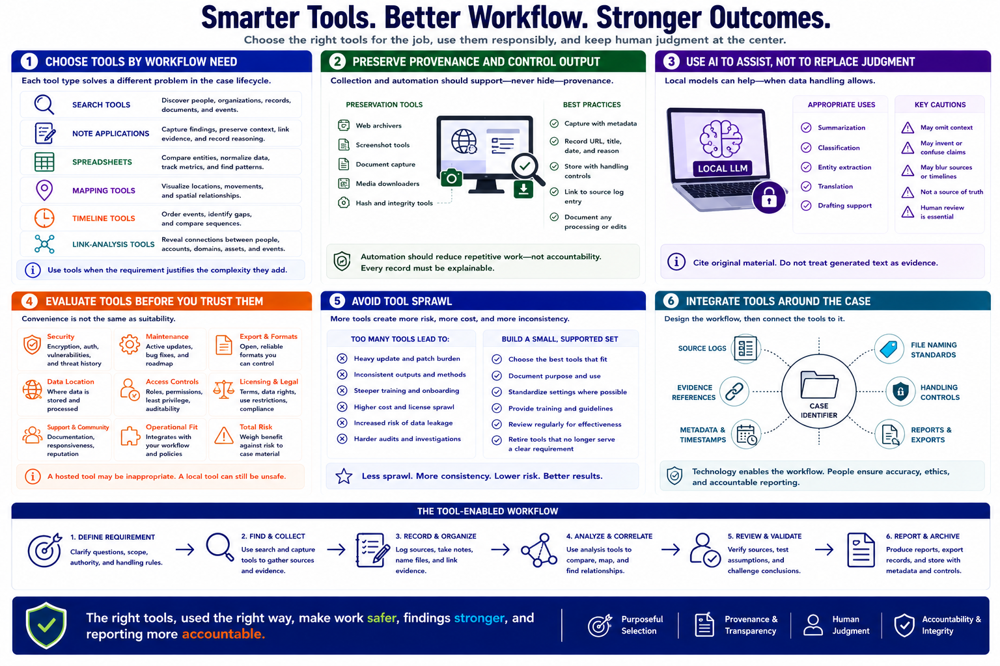

Tool Selection and Workflow Integration
Connecting to LMS... Progress: in progress

Narration
Select tools by the workflow problem they solve. Search tools discover sources. Note applications preserve context and reasoning. Spreadsheets support structured comparison. Mapping, timeline, and link-analysis tools help organize relationships when the requirement justifies them.
Archive and capture tools support preservation, but their output still needs source metadata and handling controls. Automation should reduce repetitive work without hiding provenance. An analyst must be able to explain where a record came from and what processing changed.
Local language models may assist with approved summarization, classification, or drafting when data handling permits. Their output can omit context, invent claims, or blur sources. Keep human review, cite the original material, and do not treat generated text as evidence.
Evaluate security, maintenance, export formats, data location, access controls, licensing, and support. A convenient hosted tool may not be appropriate for sensitive case material. A local tool may still be unsafe if unpatched or poorly configured.
Avoid tool sprawl. Too many overlapping utilities increase update burden, inconsistent output, training needs, and opportunities for data leakage. Standardize a small supported set, document its role, and retire tools that no longer serve a clear requirement.
Integrate tools around case identifiers, source logs, file naming, evidence references, and reporting. Technology should make the workflow safer and more repeatable. It should not replace source validation, analytical reasoning, ethical judgment, or accountable reporting.